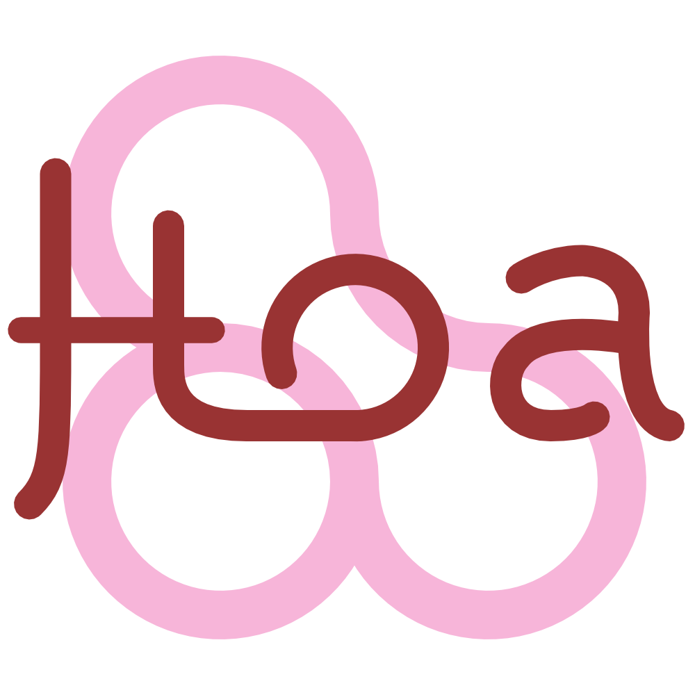

Hoa\Compiler
Write your own SQL parser

Let's play a game
Écrire un parseur SQL ? Pourquoi donc ?
- Parce que c'est cool.
- SQL vers DQL, QueryBuilder
- SQL vers Propel Query
Par contre ...
- Qui dit SQL, dit langage
- Qui dit langage, dit grammaire
- Qui dit grammaire, dit aïe.
Quelques rappels
Qu'est-ce qu'un langage ?
Un langage est un ensemble de mots dont les enchainements respectent une structure. Chaque mot est une séquence de symboles appartenant à un alphabet.
Qu'est-ce qu'un langage ?
Autrement dit : langage = notation conventionnelle destinée à formuler des idées.
Classes de langages/grammaires

- Grammaires régulières : expressions régulières
- Grammaires non-contextuelles (algébriques) : la plupart des langages de programmation
Lien entre langage et grammaire
- Ensemble de conventions ⇒ grammaire
- Convention ⇒ règle
- Mot ⇒ lexème/token
Let's write our own SQL parser!
SQL?

Yeah, sure.
Our SQL
SELECT name FROM person
SELECT name, age FROM person
SELECT p.name, age FROM person AS p
SELECT p.name, age, j.title AS job FROM person AS p, job j
Tokens
// keywords
%token select SELECT
%token from FROM
%token as AS
// identifiers
%token identifier [a-zA-Z][a-zA-Z0-9_]*
// rest
%token comma ,
%token dot .
Rules
Hoa\Compiler \o/
SELECT name, age FROM person